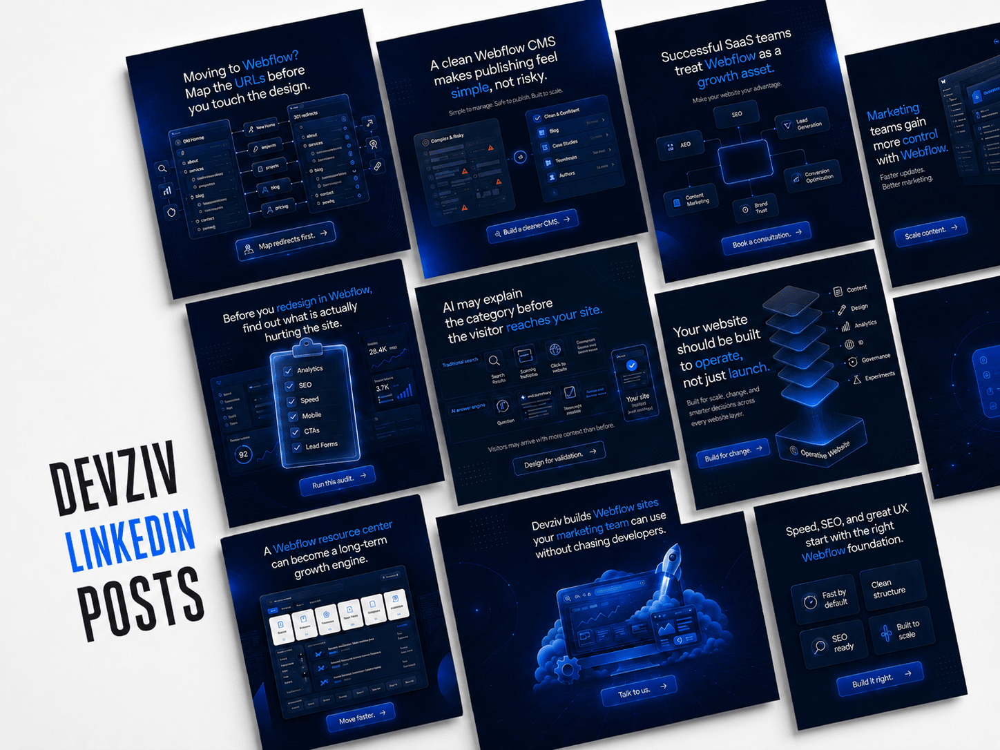
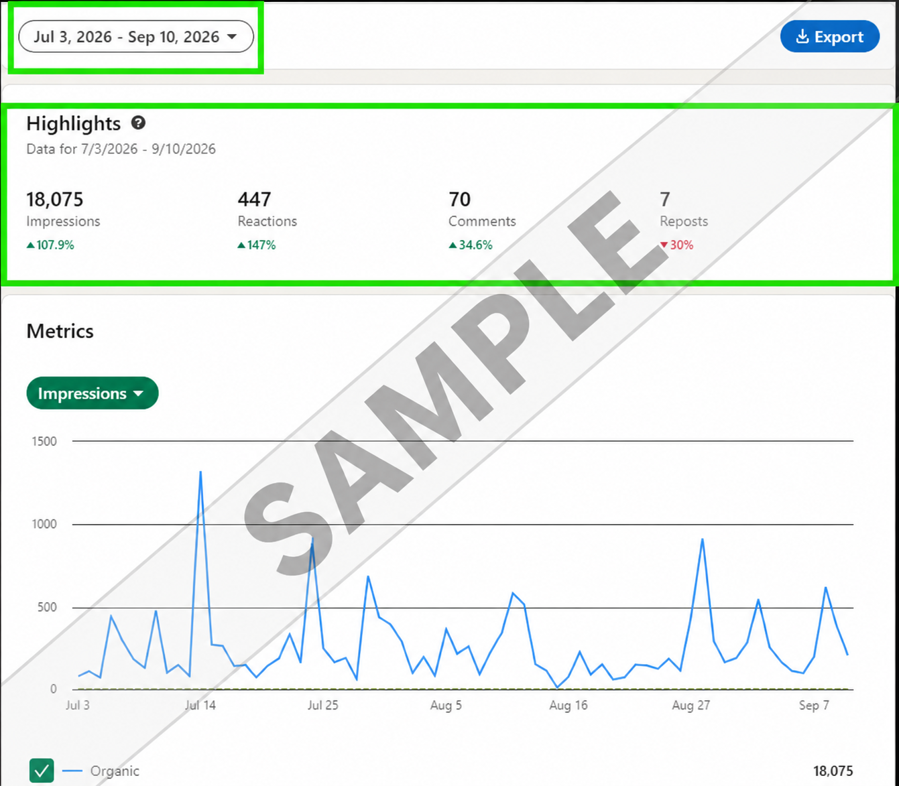
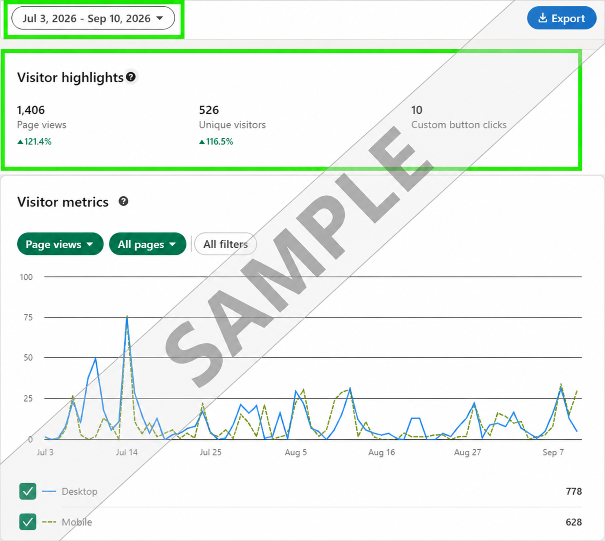
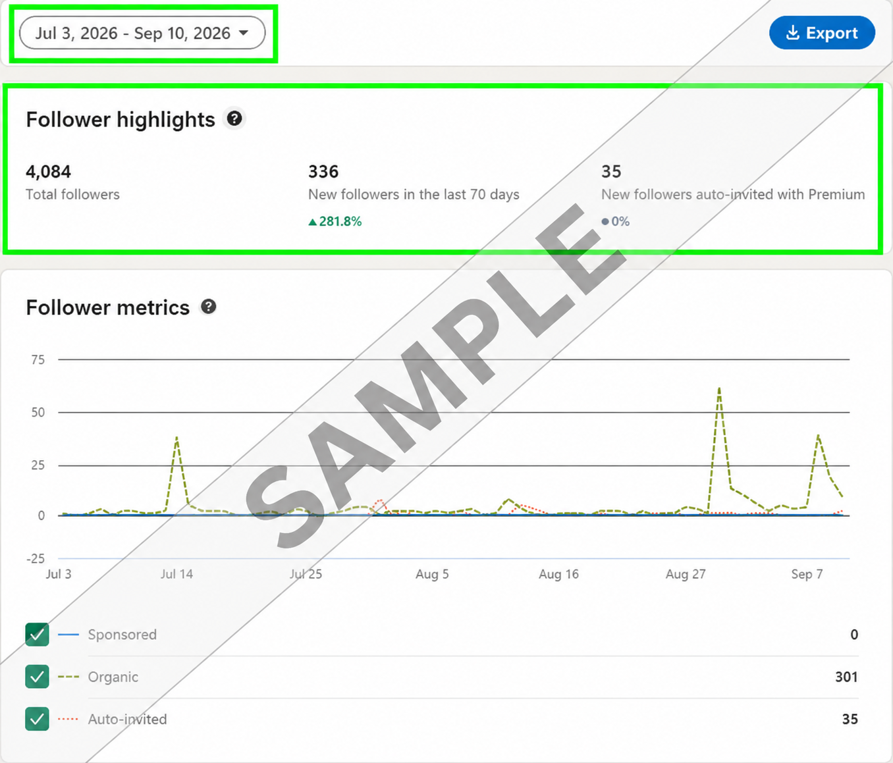

LINKEDIN GROWTH CASE STUDY
Devziv
A LinkedIn growth initiative focused on increasing followers, strengthening the company's presence and improving audience engagement through targeted content and organic growth initiatives.
Turning LinkedIn into a stronger growth channel.
When I took over Devziv's LinkedIn account on July 09, 2026, the page had been showing relatively flat performance. The opportunity was to introduce a more consistent content and growth approach, strengthen the company's presence and create more momentum with a professional B2B audience.
Consistency, relevance and audience-focused content.
The strategy focused on building momentum through consistent LinkedIn activity, useful industry-focused content and communication designed for a professional audience. I focused on creating content around relevant topics, maintaining a consistent presence and using LinkedIn analytics to identify what was gaining traction and where further improvement was possible.
A selection of content created to strengthen Devziv's LinkedIn presence and engage its professional B2B audience.

From content planning to performance analysis.
I managed the LinkedIn growth activities across content planning, publishing, audience-focused communication and performance monitoring. I used LinkedIn analytics to evaluate reach, engagement, visitor activity and follower growth, helping guide the direction of future content.
Measurable growth across visibility, engagement and audience.
The results showed a clear improvement in the page's organic momentum after the new content and growth approach was helped strengthen visibility, generate more meaningful engagement and create steady growth in the LinkedIn audience.



A stronger foundation for organic LinkedIn growth.
The campaign established measurable growth across followers, visibility, engagement and page activity. The results demonstrate how consistent, audience-focused LinkedIn activity can strengthen a B2B brand's organic presence over time.